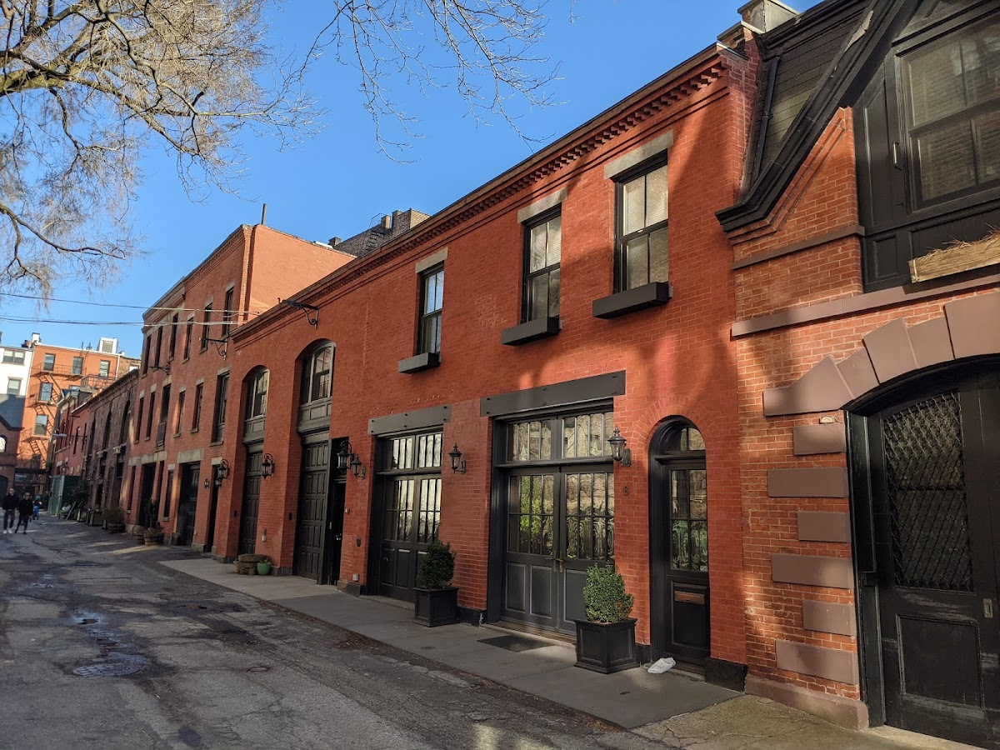
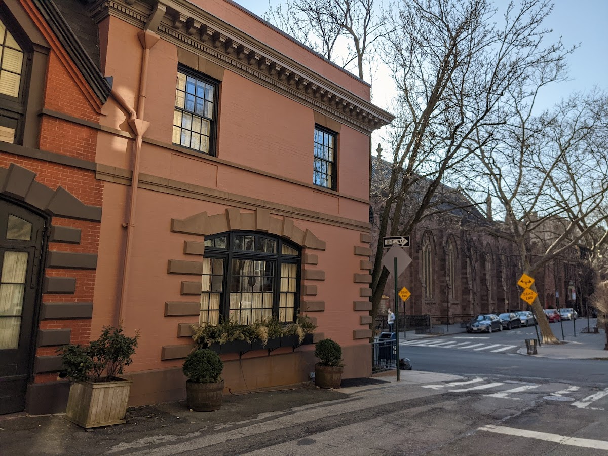
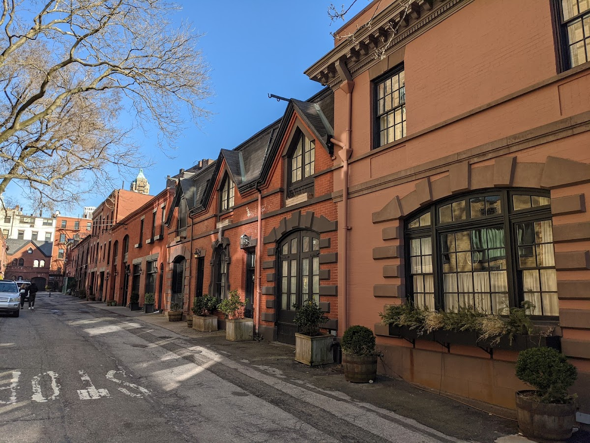
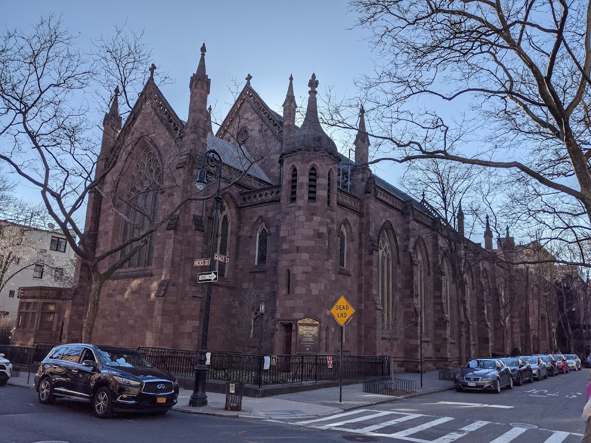
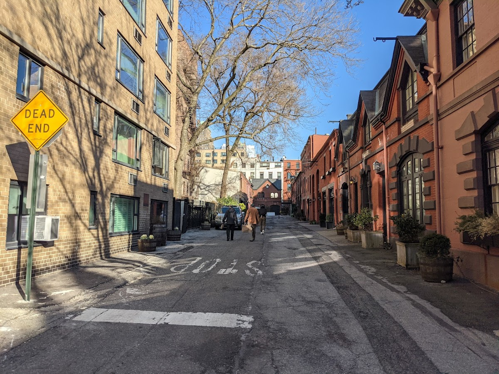

Streets
Grace Court Alley
A hidden alley in Brooklyn Heights, featuring converted carriage houses.
Background
Grace Court Alley was originally used for stables and carriage houses serving the grand homes of Brooklyn Heights. In the 20th century, these structures were converted into residences, creating a unique and secluded living environment.
Original AI-assisted background; not independently verified.
From the original map
Brooklyn Heights carriage house dead end street.
Check current access before visiting. A place on this map is not necessarily open to the public.
Nearby places
Straight-line distances, not walking routes.
Discussion & corrections





Photo credits
Oguz Yucel40.69388, -73.99578 · Explore the surrounding area ↗